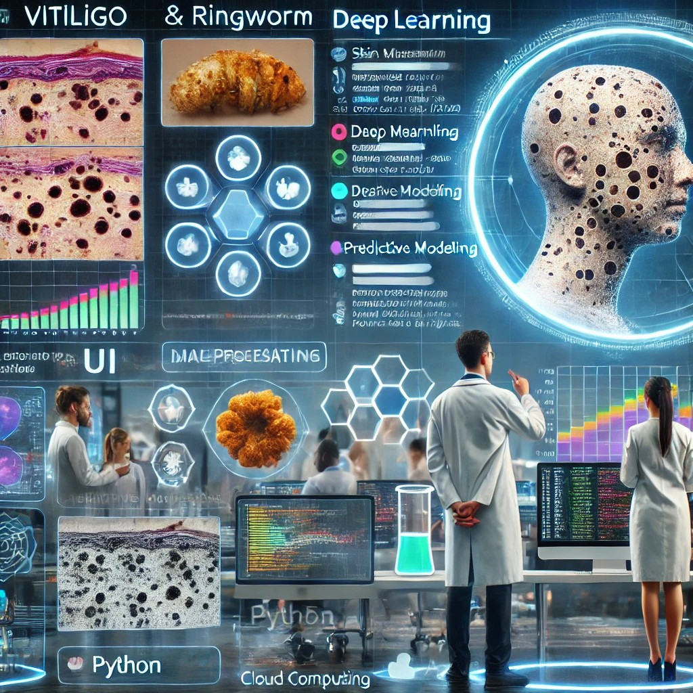
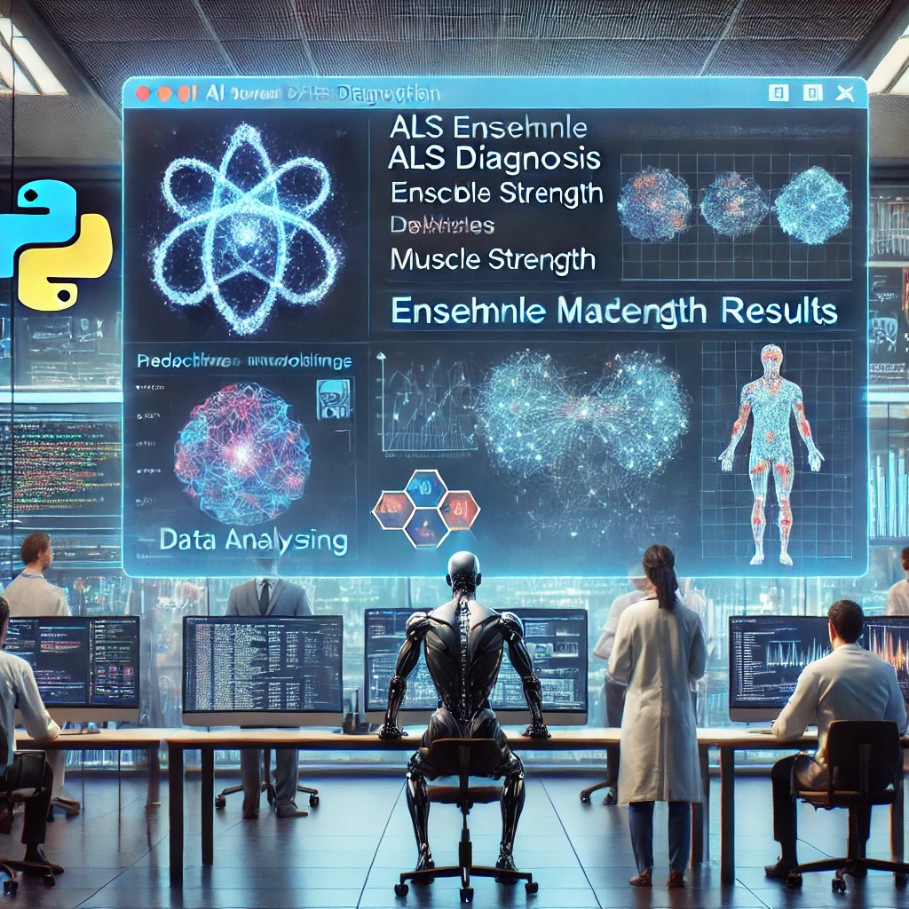
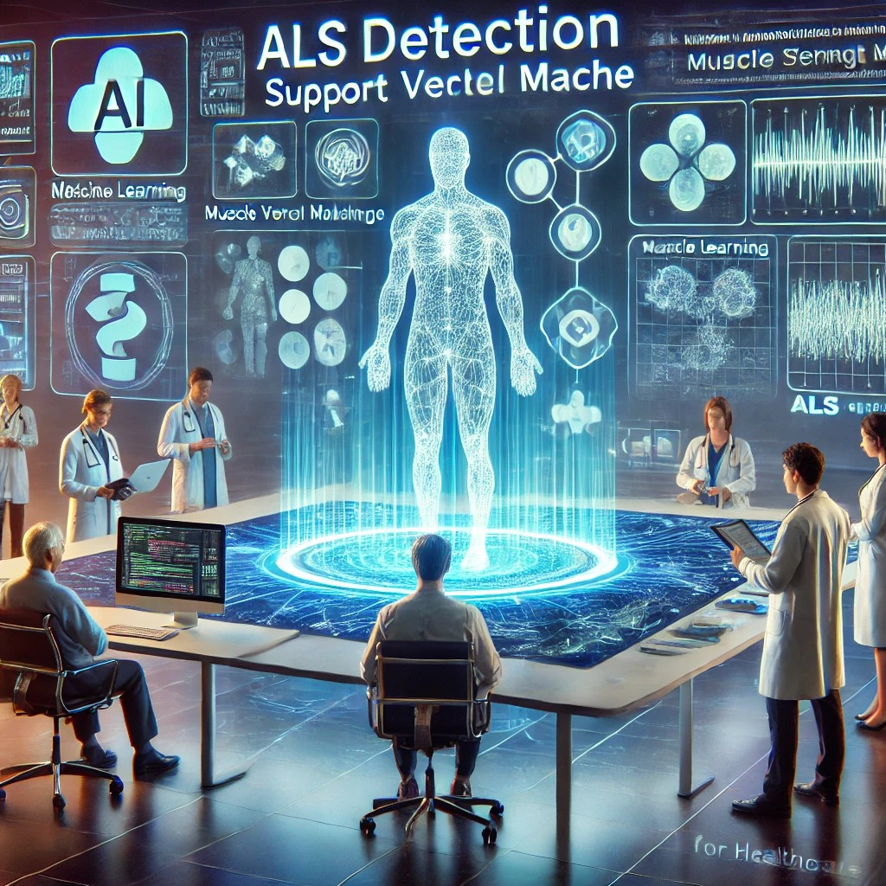

Projects
A portfolio of projects showcasing expertise in machine learning, AI-driven diagnostics, and cloud-based solutions, with research presented at national and international conferences.

-
🚀 AI-powered medical image classification
- Developed an AI-driven UI application for diagnosing vitiligo and ringworm using deep learning.
Integrated advanced image classification and data preprocessing techniques to enhance medical image analysis accuracy.
- 📌 Presented at the 5th International Conference on Smart Electronics and Communication (ICOSEC) 2024, highlighting innovations in AI-driven dermatological diagnostics.

- 🧠 Advanced neurological disease diagnostics
-
Developed a comprehensive UI application for ALS diagnosis using ensemble machine learning techniques, analyzing muscle strength datasets and optimizing model performance through advanced serialization methods.
-
📌 Presented at the 3rd International Conference on Ambient Intelligence in Health Care (2025), showcasing an innovative diagnostic approach in neurological disease detection.
-
🚦 IoT-based real-time safety monitoring
-
Designed an IoT prototype for real-time rail gate safety monitoring, integrating a cloud-based data interpretation system with automated alert mechanisms to enhance transportation infrastructure security.
-
📌 Published in the International Journal for Research Trends and Innovations (2023), showcasing cutting-edge solutions for critical safety challenges.

- 🧬 Machine learning for neurological diagnostics
-
Led the development of an AI-powered application for ALS detection, leveraging Support Vector Machine (SVM) algorithms to analyze muscle strength datasets and improve diagnostic accuracy.
-
📌 Presented at the Smart and AI-Enabled Technology for Sustainable Development Conference 2023, highlighting novel approaches in neurological disease detection.